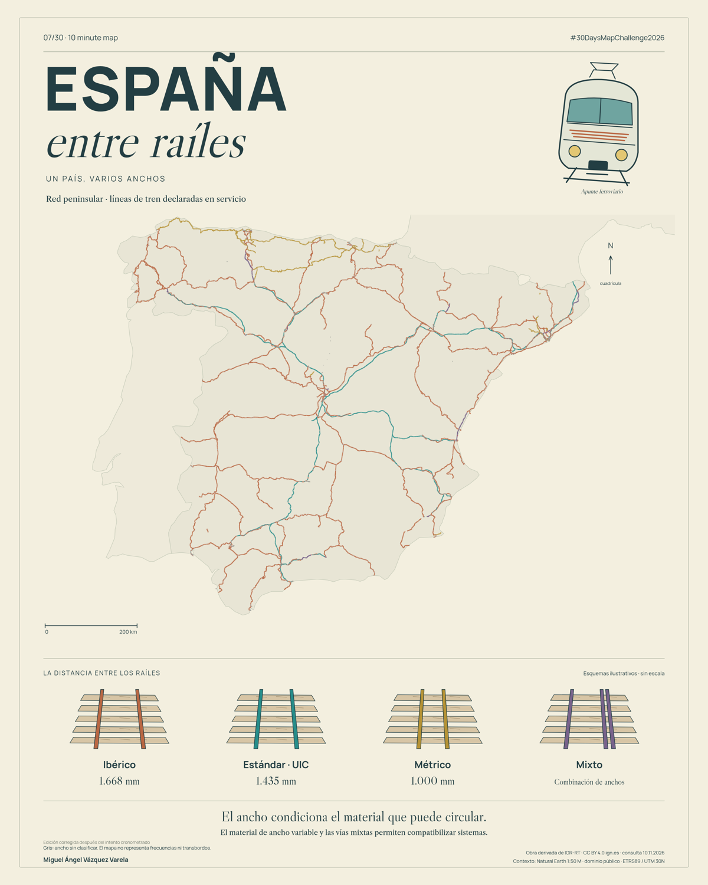

Edición con el encuadre corregido después del intento cronometrado. La exportación original se obtuvo en 9 min 30 s; esta revisión posterior se documenta por separado.

Miguel Ángel Vázquez Varela · IGN IGR-RT, CC BY 4.0 · Natural Earth, dominio público.